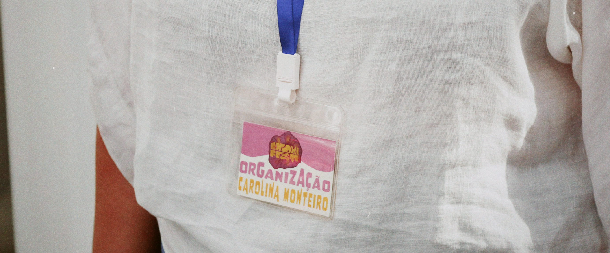

|
Com a proposta do projeto final, tinha a certeza que queria abordar esta questão sensível do vegetarianismo, principalmente na cidade de Vila Nova de Famalicão. Como tenho como hobby cozinhar, queria demonstrar à população que a comida vegetariana pode ser saborosa e rica. Aliando a isso, acredito que a saúde mental de grande parte da população está frágil, por isso surgiu a ideia de criar um dia onde concilia-se estes dois fatores. |


|  |
Nasceu assim o Enoki Fest, um festival vegetariano realizado no Mercado Municipal, onde as pessoas puderam experimentar novos sabores, realizar uma aula de pilates, assistir a um showcooking, conversar sobre agricultura biológica e aproveitar música ao vivo ao longo do dia. |